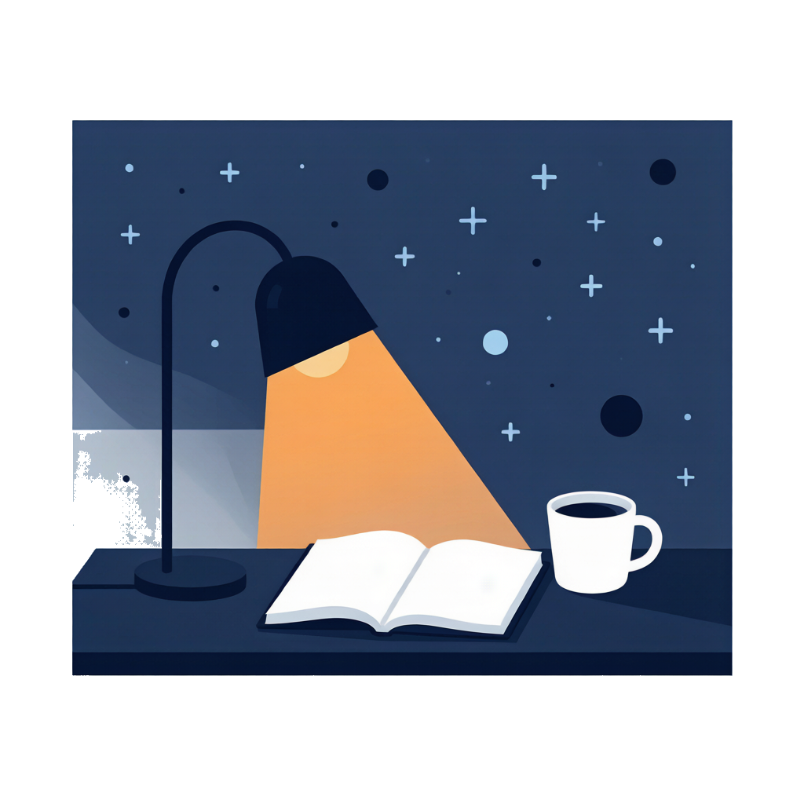
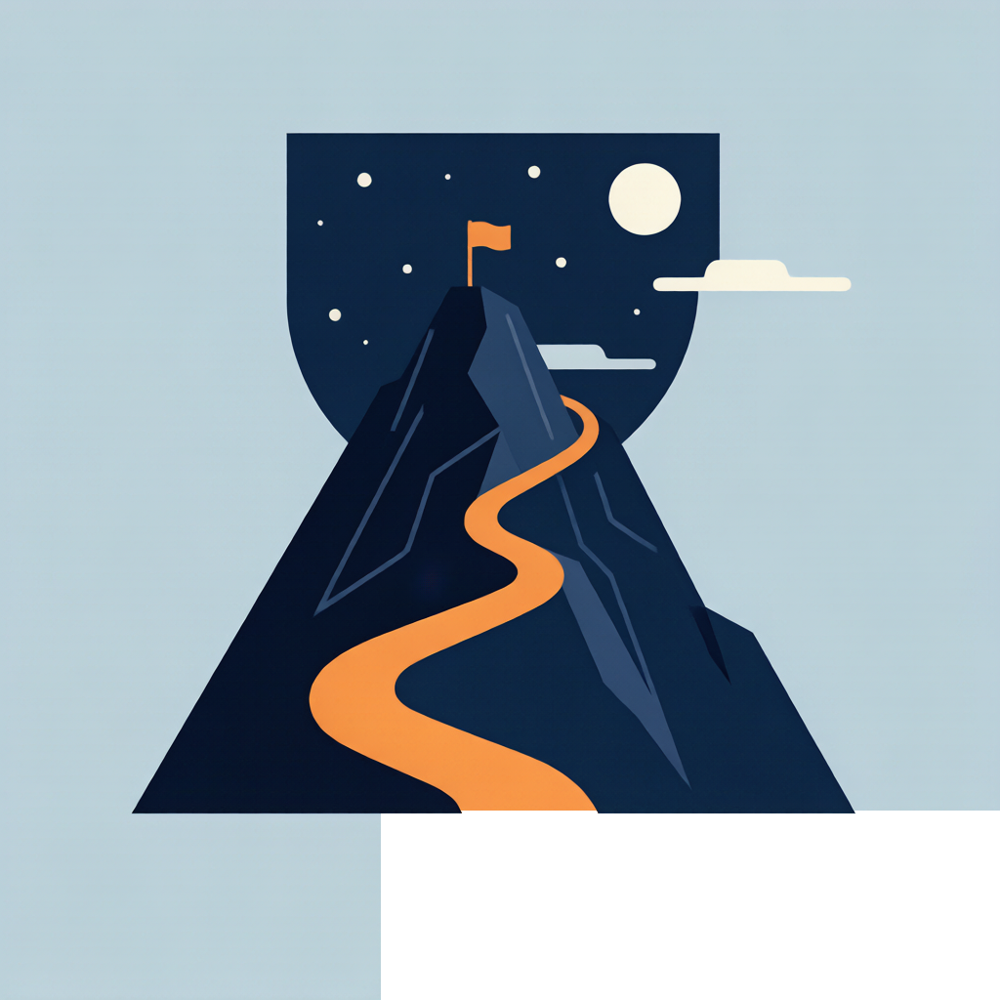
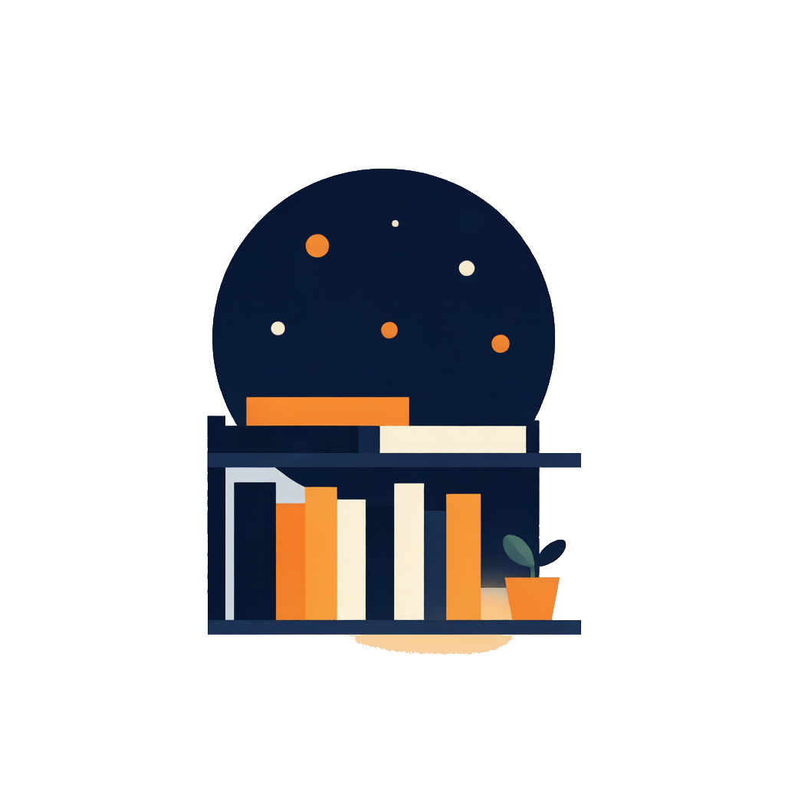
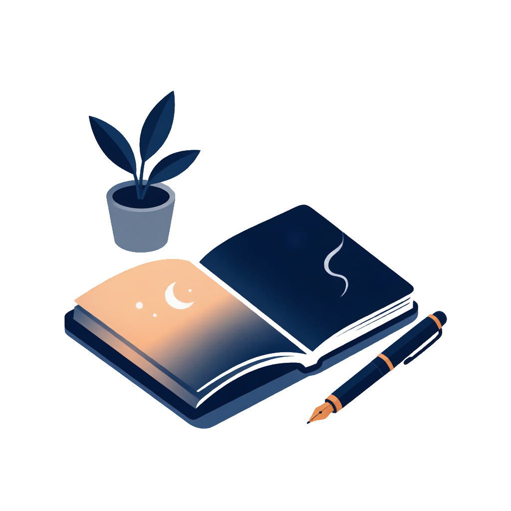

          <div class="grid grid-cols-3 gap-3.5 mt-5">
            <section class="panel p-4" aria-labelledby="action-title">
              
              <div class="flex items-center justify-between mb-3">
                <div class="section-title" id="action-title">
                  <svg width="16" height="16" viewBox="0 0 24 24" fill="none" stroke="#ff9f45" stroke-width="2" stroke-linecap="round" stroke-linejoin="round"><rect x="3" y="4" width="18" height="18" rx="2"/><path d="M16 2v4M8 2v4M3 10h18"/></svg>
                  今日执行
                </div>
                <div class="flex rounded-md overflow-hidden border border-[#dfe4ec] text-[11px]">
                  <button class="px-2 h-6 bg-[#fff0de] text-[#ff9f45] font-bold">待办</button>
                  <button class="px-2 h-6 bg-white text-[#6b7691]">习惯</button>
                </div>
              </div>
              <div>
                <div class="task-row task-row-3" data-task="整理本周材料"><button class="check" aria-label="完成整理本周材料"><i class="fa-solid fa-check text-[10px]"></i></button><span class="task-name">整理本周材料</span><span class="text-[11px] text-[#3a4a6b] font-semibold">今天</span></div>
                <div class="task-row task-row-3" data-task="回复客户邮件"><button class="check" aria-label="完成回复客户邮件"><i class="fa-solid fa-check text-[10px]"></i></button><span class="task-name">回复客户邮件</span><span class="text-[11px] subtle">18:00</span></div>
                <div class="task-row task-row-3" data-task="更新简历"><button class="check" aria-label="完成更新简历"><i class="fa-solid fa-check text-[10px]"></i></button><span class="task-name">更新简历</span><span class="text-[11px] subtle">无日期</span></div>
              </div>
              <hr class="divider-grad" />
              <div class="flex items-center gap-1 flex-wrap text-[11px]">
                <span class="font-bold text-[#4a5570] mr-1">习惯</span>
                <span class="subtle">写作</span><button class="habit-action habit-action-3" data-habit="写作">打卡</button>
                <span class="subtle ml-1">拉伸</span><button class="habit-action habit-action-3 done" data-habit="拉伸"><i class="fa-solid fa-check mr-1"></i>已</button>
              </div>
              <button class="text-action text-[11px] mt-3">查看全部 →</button>
            </section>

            <section class="panel p-4" aria-labelledby="project-title">
              
              <div class="flex items-center justify-between mb-3">
                <div class="section-title" id="project-title">
                  <svg width="16" height="16" viewBox="0 0 24 24" fill="none" stroke="#1e2a4a" stroke-width="2" stroke-linecap="round" stroke-linejoin="round"><path d="M3 20h18"/><path d="M5 20V10l7-5 7 5v10"/></svg>
                  当前项目
                </div>
                <button class="text-action text-[11px]">全部 →</button>
              </div>
              <div class="space-y-3 mt-2">
                <div><div class="flex justify-between items-center"><div class="text-[13px] font-semibold truncate">人生系统整理</div><span class="text-[11px] font-extrabold text-[#ff9f45]">60%</span></div><div class="text-[10px] subtle">生活项目 · 5 项任务</div><div class="mini-progress mt-1.5"><span style="width:60%"></span></div></div>
                <div><div class="flex justify-between items-center"><div class="text-[13px] font-semibold truncate">仓库管理系统 v2</div><span class="text-[11px] font-extrabold text-[#1e2a4a]">开发中</span></div><div class="text-[10px] subtle">开发项目 · 需求阶段</div><div class="mini-progress mt-1.5"><span style="width:30%;background:#3a4a6b"></span></div></div>
                <div><div class="flex justify-between items-center"><div class="text-[13px] font-semibold truncate">表达能力提升</div><span class="text-[11px] font-extrabold text-[#1e2a4a]">2/5</span></div><div class="text-[10px] subtle">生活项目 · 里程碑</div><div class="mini-progress mt-1.5"><span style="width:40%"></span></div></div>
              </div>
              <button class="text-action text-[11px] mt-3">新建想法 →</button>
            </section>

            <section class="panel p-4" aria-labelledby="knowledge-title">
              
              <div class="flex items-center justify-between mb-3">
                <div class="section-title" id="knowledge-title">
                  <svg width="16" height="16" viewBox="0 0 24 24" fill="none" stroke="#141d33" stroke-width="2" stroke-linecap="round" stroke-linejoin="round"><path d="M2 3h6a4 4 0 0 1 4 4v14a3 3 0 0 0-3-3H2z"/><path d="M22 3h-6a4 4 0 0 0-4 4v14a3 3 0 0 1 3-3h7z"/></svg>
                  知识库
                </div>
                <button class="text-action text-[11px]">进入 →</button>
              </div>
              <div class="grid grid-cols-2 gap-y-2 mt-2">
                <div><div class="text-[20px] font-extrabold text-[#ff9f45]">48</div><div class="text-[10px] subtle">已入库文档</div></div>
                <div><div class="text-[20px] font-extrabold text-[#141d33]">12</div><div class="text-[10px] subtle">待处理收藏</div></div>
                <div><div class="text-[20px] font-extrabold text-[#1e2a4a]">5</div><div class="text-[10px] subtle">Prompt 模板</div></div>
                <div><div class="text-[20px] font-extrabold text-[#3a4a6b]">1</div><div class="text-[10px] subtle">索引中</div></div>
              </div>
              <div class="pt-2 mt-2 border-t border-[#e6eaf2]"><span class="badge badge-navy"><i class="fa-solid fa-circle-notch fa-spin"></i>《沟通技巧整理》索引中</span></div>
              <button class="text-action text-[11px] mt-3">RAG 问答 →</button>
            </section>

            <section class="panel p-4" aria-labelledby="timeline-title">
              
              <div class="flex items-center justify-between mb-3">
                <div class="section-title" id="timeline-title">
                  <svg width="16" height="16" viewBox="0 0 24 24" fill="none" stroke="#1e2a4a" stroke-width="2" stroke-linecap="round" stroke-linejoin="round"><path d="M4 19.5A2.5 2.5 0 0 1 6.5 17H20"/><path d="M6.5 2H20v20H6.5A2.5 2.5 0 0 1 4 19.5v-15A2.5 2.5 0 0 1 6.5 2z"/></svg>
                  最近沉淀
                </div>
                <button class="text-action text-[11px]">时间线 →</button>
              </div>
              <div class="timeline-item"><div class="flex items-center gap-2"><span class="badge badge-primary">灵感</span><span class="text-[10px] subtle">10:22</span></div><div class="font-semibold text-[12px] mt-1.5">把"想做"写成可执行的下一步</div></div>
              <div class="timeline-item"><div class="flex items-center gap-2"><span class="badge badge-navy">决策</span><span class="text-[10px] subtle">昨天</span></div><div class="font-semibold text-[12px] mt-1.5">先做本地优先,再考虑同步</div></div>
              <div class="timeline-item"><div class="flex items-center gap-2"><span class="badge badge-forest">复盘</span><span class="text-[10px] subtle">8/16</span></div><div class="font-semibold text-[12px] mt-1.5">本周完成了 3 件小事</div></div>
              <button class="text-action text-[11px] mt-3">写一条新沉淀 →</button>
            </section>

            <section class="panel p-4" aria-labelledby="goal-title">
              <div class="flex items-center justify-between mb-3">
                <div class="section-title" id="goal-title">
                  <svg width="16" height="16" viewBox="0 0 24 24" fill="none" stroke="#3a4a6b" stroke-width="2" stroke-linecap="round" stroke-linejoin="round"><circle cx="12" cy="12" r="10"/><circle cx="12" cy="12" r="6"/><circle cx="12" cy="12" r="2"/></svg>
                  目标进展
                </div>
                <button class="text-action text-[11px]">全部 →</button>
              </div>
              <div class="metric-list mt-2">
                <div class="metric-row metric-row-3"><div class="flex justify-between gap-2"><div><div class="font-semibold text-[12px]">体重回到 65 kg</div><div class="text-[10px] subtle">数值 · 下次 8/24</div></div><div class="text-[14px] font-extrabold text-[#ff9f45]">68%</div></div><div class="mini-progress mt-1.5"><span style="width:68%"></span></div></div>
                <div class="metric-row metric-row-3"><div class="flex justify-between gap-2"><div><div class="font-semibold text-[12px]">表达能力提升</div><div class="text-[10px] subtle">里程碑 · 2/5</div></div><div class="text-[14px] font-extrabold text-[#1e2a4a]">40%</div></div><div class="mini-progress mt-1.5"><span style="width:40%"></span></div></div>
                <div class="metric-row metric-row-3"><div class="flex justify-between gap-2"><div><div class="font-semibold text-[12px]">改善睡眠</div><div class="text-[10px] subtle">状态型</div></div><span class="badge badge-forest">进行中</span></div></div>
              </div>
              <button class="text-action text-[11px] mt-3">记录数据 →</button>
            </section>

            <section class="panel p-4" aria-labelledby="reminder-title">
              <div class="flex items-center justify-between mb-3">
                <div class="section-title" id="reminder-title">
                  <svg width="16" height="16" viewBox="0 0 24 24" fill="none" stroke="#1e2a4a" stroke-width="2" stroke-linecap="round" stroke-linejoin="round"><path d="M18 8A6 6 0 0 0 6 8c0 7-3 9-3 9h18s-3-2-3-9"/><path d="M13.73 21a2 2 0 0 1-3.46 0"/></svg>
                  提醒 · 情绪
                </div>
                <button id="open-notification" class="text-action text-[11px]">全部 →</button>
              </div>
              <div class="space-y-2.5 mt-2">
                <div class="flex gap-2.5"><div class="icon-chip icon-chip-3 bg-[#e6ebf5] text-[#3a4a6b]"><i class="fa-regular fa-flag text-[12px]"></i></div><div><div class="font-semibold text-[12px]">体重目标 3 天后到期</div><div class="text-[10px] subtle">可记录一次真实数据</div></div></div>
                <div class="flex gap-2.5"><div class="icon-chip icon-chip-3 bg-[#e2e7f2] text-[#1e2a4a]"><i class="fa-solid fa-repeat text-[12px]"></i></div><div><div class="font-semibold text-[12px]">写作今天还没打卡</div><div class="text-[10px] subtle">不合适也可以留空</div></div></div>
                <div class="flex gap-2.5 pt-2.5 border-t border-[#e6eaf2]"><div class="icon-chip icon-chip-3 bg-[#fff0de] text-[#ff9f45]"><i class="fa-regular fa-heart text-[12px]"></i></div><div><div class="font-semibold text-[12px]">最近情绪 · 周三</div><div class="text-[10px] subtle">"有点焦虑" · 强度 3</div></div></div>
              </div>
              <button class="text-action text-[11px] mt-3">记录情绪 →</button>
            </section>
          </div>

          <div class="grid grid-cols-3 gap-3.5 mt-5">
            <section class="panel p-4" aria-label="快捷入口">
              <div class="section-title mb-3">
                <svg width="16" height="16" viewBox="0 0 24 24" fill="none" stroke="#ff9f45" stroke-width="2" stroke-linecap="round" stroke-linejoin="round"><path d="M13 2L3 14h9l-1 8 10-12h-9l1-8z"/></svg>
                快捷入口
              </div>
              <div class="grid grid-cols-2 gap-2 mt-2">
                <button class="quick-btn"><i class="fa-solid fa-circle-check"></i><span>新建待办</span></button>
                <button class="quick-btn"><i class="fa-solid fa-bullseye"></i><span>新建目标</span></button>
                <button class="quick-btn"><i class="fa-solid fa-lightbulb"></i><span>新建想法</span></button>
                <button class="quick-btn"><i class="fa-regular fa-heart"></i><span>记录情绪</span></button>
                <button class="quick-btn col-span-2"><i class="fa-solid fa-book-open"></i><span>进入知识库 · 剪藏 / 导入 / 问答</span></button>
              </div>
            </section>

            <section class="panel p-4" aria-label="AI 协作小助手" style="background:linear-gradient(135deg,#1e2a4a 0%,#141d33 100%);border-color:transparent">
              <div class="flex items-center gap-2.5 mb-3">
                <div class="w-10 h-10 rounded-full grid place-items-center text-[18px]" style="background:linear-gradient(135deg,#ff9f45,#e0842a)">★</div>
                <div>
                  <div class="text-[13px] font-extrabold text-white">AI 协作小助手</div>
                  <div class="text-[10px] text-white/65">本地优先,需要时联网</div>
                </div>
                <span class="ml-auto text-[10px] text-[#3a4a6b] bg-[#fff0de] px-1.5 py-0.5 rounded-full font-bold">Beta</span>
              </div>
              <p class="text-[12px] text-white/85 leading-relaxed mb-3">"我能帮你梳理目标、整理复盘、从知识库里找答案。先试试看,不满意再调。"</p>
              <div class="space-y-1.5">
                <button class="ai-link"><i class="fa-solid fa-magnifying-glass"></i>问知识库 · 找之前的笔记</button>
                <button class="ai-link"><i class="fa-solid fa-arrows-rotate"></i>生成本周复盘草稿</button>
                <button class="ai-link"><i class="fa-regular fa-heart"></i>看我的情绪趋势</button>
              </div>
            </section>

            <section class="panel p-4" aria-label="长期资产库">
              <div class="section-title mb-3">
                <svg width="16" height="16" viewBox="0 0 24 24" fill="none" stroke="#1e2a4a" stroke-width="2" stroke-linecap="round" stroke-linejoin="round"><path d="M21 16V8a2 2 0 0 0-1-1.73l-7-4a2 2 0 0 0-2 0l-7 4A2 2 0 0 0 3 8v8a2 2 0 0 0 1 1.73l7 4a2 2 0 0 0 2 0l7-4A2 2 0 0 0 21 16z"/></svg>
                长期资产库
              </div>
              <div class="grid grid-cols-2 gap-2 mt-2">
                <button class="asset-btn"><i class="fa-solid fa-database"></i><span>知识库</span><span class="text-[10px] text-[#6b7691]">48</span></button>
                <button class="asset-btn"><i class="fa-solid fa-toolbox"></i><span>技能资产</span><span class="text-[10px] text-[#6b7691]">3</span></button>
                <button class="asset-btn"><i class="fa-solid fa-keyboard"></i><span>Prompt</span><span class="text-[10px] text-[#6b7691]">5</span></button>
                <button class="asset-btn"><i class="fa-solid fa-lightbulb"></i><span>想法漏斗</span><span class="text-[10px] text-[#6b7691]">2</span></button>
              </div>
            </section>
          </div>
        </main>
